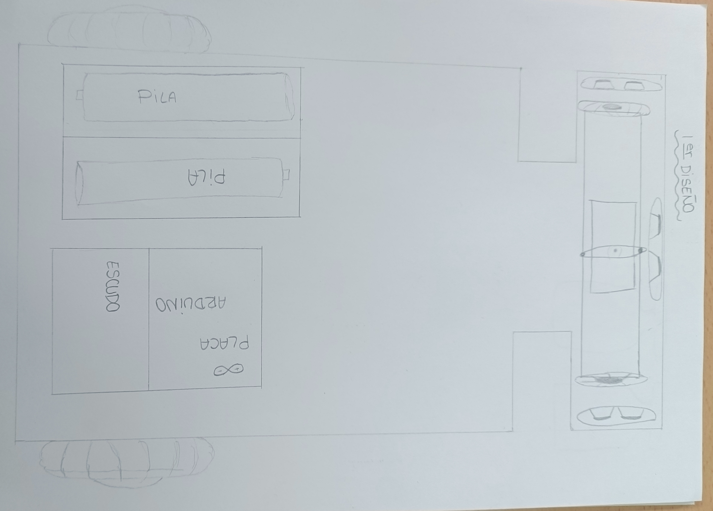
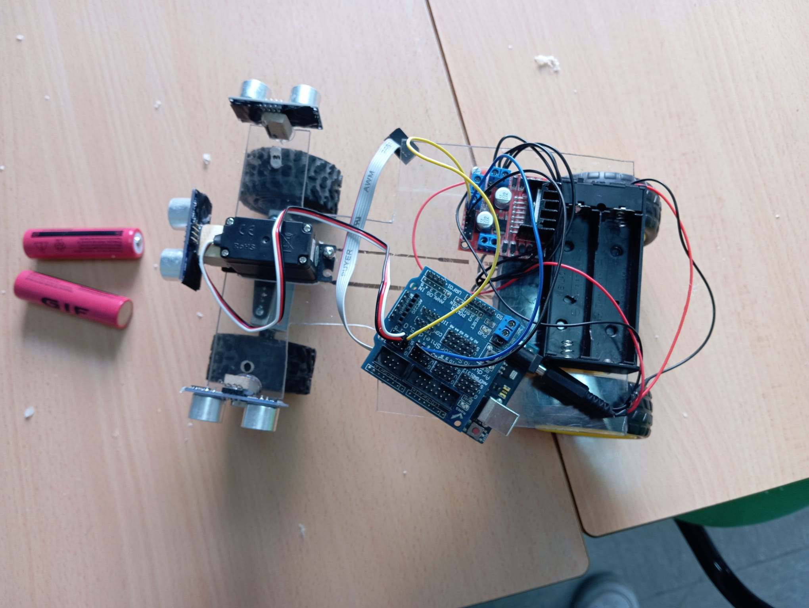
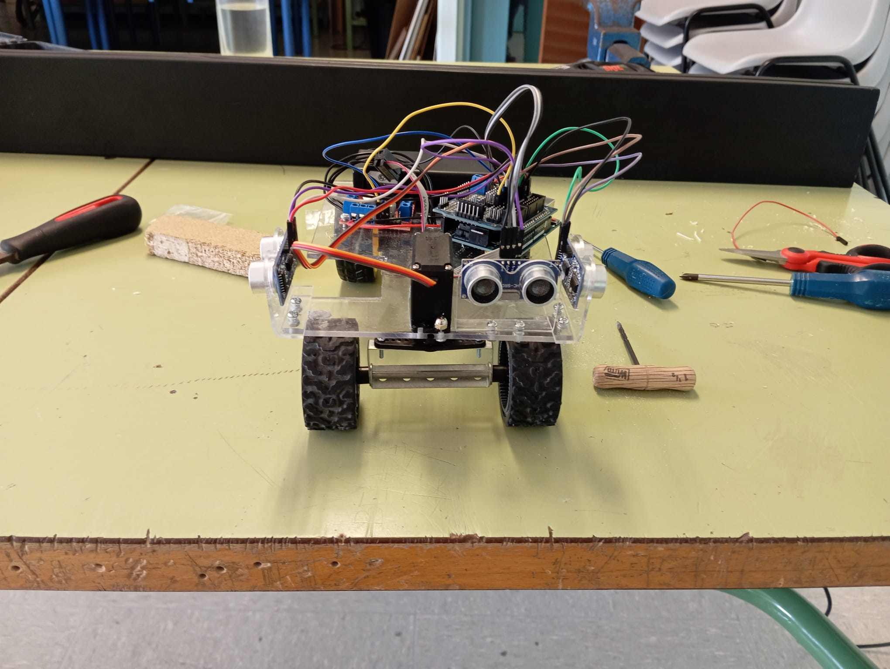
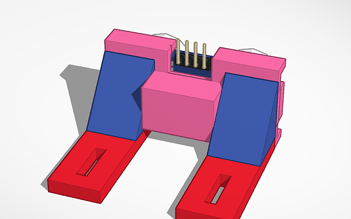

Victoria Lucena Herrador. Boceto papel ordenado(CC0)
Desde el primer día teníamos claro que queríamos que nuestro robot se viera como un coche de verdad. Nos imaginábamos una estructura bien proporcionada, con cuatro ruedas, una parte delantera definida para los sensores, una base firme y todos los componentes bien organizados. Queríamos que tuviera un diseño limpio, compacto y visualmente claro, donde se notara qué era la parte delantera, la trasera y cómo se movía. La idea era que no pareciera un robot improvisado, sino un vehículo pequeño, pero serio y bien construido.
Desarrollo de la estructura:
Al principio, la base del robot la hicimos de madera, porque era un material ligero, fácil de cortar, y manipular para hacer pruebas rápidas, pues este iba a ser un prototipo. Esa primera estructura nos sirvió para tener una idea general del tamaño, peso y la distribución de los componentes ya que el reglamento decía:
- Dimensiones máximas del robot:
“El vehículo no puede superar los 300 mm de largo, 200 mm de ancho y 300 mm de alto.” 🔹 Regla 10.1
- Peso máximo permitido:
“El peso del vehículo no puede superar los 1.5 kilogramos.” 🔹 Regla 10.2
Pero este prototipo no duró mucho. Durante los primeros montajes y ajustes mecánicos, la base se rompió, sobre todo por la presión que ejercían los motores (que pesaban mucho para la base de madera tan fina que usábamos) y por el sistema de dirección que ya habíamos empezado a montar (hicimos muchos huecos juntos y estos se unieron por el desgaste de la madera).
Esto nos ayudó a saber que necesitábamos algo más resistente y preciso.
Después de eso, decidimos reconstruir la base usando metacrilato (acrílico transparente). Este material resultó mucho mejor para lo que queríamos: es más rígido, ligero, fácil de perforar y al ser transparente, nos permite ver todos los componentes desde ambos lados, lo cual facilitó mucho el montaje, las marcas de corte y los ajustes de cableado. En esta nueva base, queríamos dejar espacio y fijaciones para varios sensores, así que hicimos un diseño propio para sujetar los sensores ultrasónicos, pero más adelante encontramos por internet unos soportes específicos ya hechos, que eran más robustos y prácticos, así que decidimos comprarlos y reemplazar nuestro diseño inicial.
Además, al montar los motores traseros directamente en el acrílico, nos dimos cuenta de que las ruedas quedaban desalineadas en altura respecto a las delanteras. Para solucionar eso, diseñamos y fabricamos un bloque espaciador impreso en 3D, que colocamos entre los motores y la base de metacrilato. Este bloque levantó un poco la parte trasera del robot, haciendo que las ruedas traseras quedaran a la misma altura que las delanteras respecto al suelo. Gracias a eso, el chasis quedó nivelado y mucho más estable.
Una vez tuvimos la base de metacrilato lista y nivelada, empezamos a colocar los componentes electrónicos. En el centro de la base montamos la placa de Arduino, que actúa como el cerebro del robot. Encima de ella colocamos un shield (escudo), que decidimos usar porque facilita mucho las conexiones eléctricas, especialmente los puertos positivos y negativos necesarios para los sensores, motores y demás componentes. Gracias a esto, pudimos organizar todo mejor y evitar enredos de cables.
Al principio, usamos una pila de 9V como fuente de alimentación, pero por algunos problemas que se explican en el apartado de electrónica, acabamos utilizando un portapilas con dos baterías recargables de 3.7V cada una. Este portapilas lo colocamos en la parte trasera de la base, cerca de los motores, para distribuir bien el peso y que no interfiriera con el resto del montaje.
FOTO PILAS ANTES Y DESPUES
Sofía Romero Luque. robot con pilas y portapilas nuevo(CC0)
El driver de motores lo instalamos al lado de la placa, en una zona donde los cables hacia los motores pudieran ir directos, sin cruzar todo el robot. Esto ayudó a mantener el cableado ordenado y redujo interferencias. Con esta distribución, todos los componentes quedan bien organizados, accesibles y el robot funciona de forma mucho más estable y duradera.
Daniel Bautista Cortijo. robot de frente ultimo diseño(CC0)
Diseños 3D

Daniel Bautista Cortijo. soporte ultra(CC0)Daniel Bautista Cortijo. base negra(CC0)